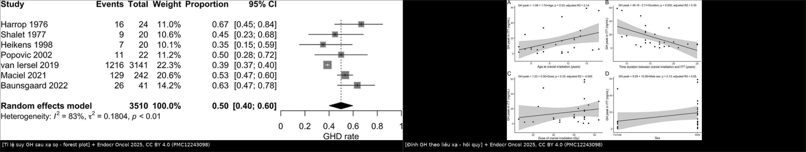
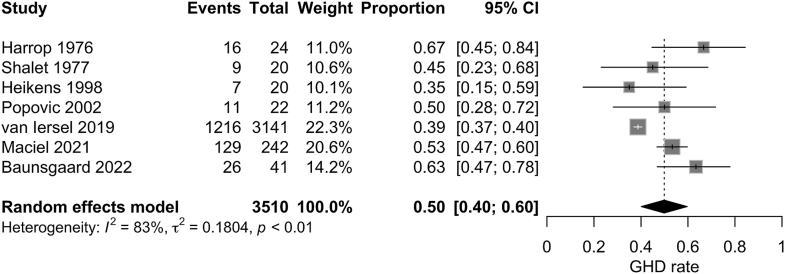
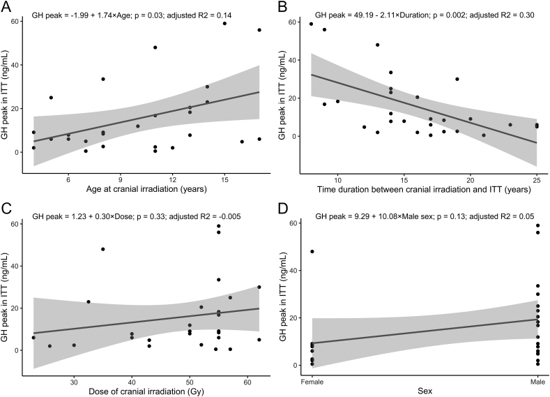
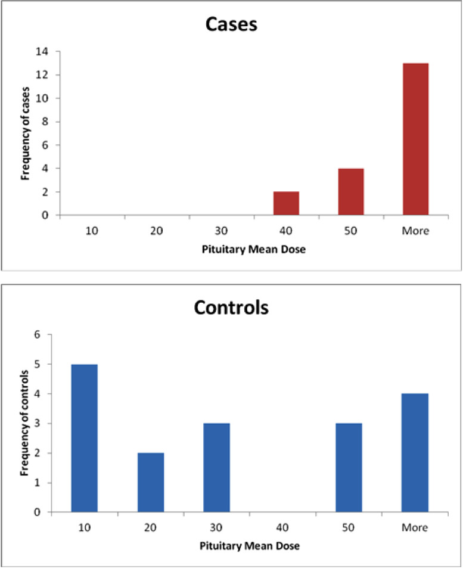

1752 — Suy tuyến yên sau xạ trị sọ ở trẻ / Radiation-induced hypopituitarism in children
Tags: pattern:suy-tuyen-yen pattern:thieu-hut-hormone pattern:cham-tang-truong vung:tuyen-yen vung:nao protocol:sang-loc-noi-tiet protocol:xa-tri score:lieu-nguong incidentaloma:khong
Mức chắc chắn (certainty): tổng hợp y văn (literature synthesis) — 1 meta-analysis tỉ lệ suy GH sau xạ sọ (Endocr Oncol 2025, PMC12243098, CC BY 4.0), 1 đoàn hệ trẻ ALL 18–24 Gy (Indian J Med Paediatr Oncol 2013, PMC3715991, CC BY-NC-SA 3.0), 1 case–control liều–đáp ứng người lớn (Adv Radiat Oncol 2021, PMC8184512, CC BY-NC-ND 4.0), và 1 tổng quan cơ chế–y văn (Endocr Connect 2022, PMC9716369, CC BY-NC 4.0) tổng hợp các đoàn hệ Vatner 2018, Chemaitilly 2015, van Iersel 2019/2020. Không có ca nguyên văn do nhóm tự viết (bài không có ảnh lâm sàng bệnh nhi); quiz dùng chính các biểu đồ của bài gốc.
Câu chốt: sau xạ sọ ở trẻ, GH là trục mất đầu tiên và hay nhất — gộp 50% (95% CI 40–60) người sống sót u não bị suy GH; nhưng liều xạ một mình không dự báo được đỉnh GH (hồi quy p = 0,33) trong khi thời gian sau xạ thì có (p = 0,002, R² = 0,30). Vì vậy không được ngừng theo dõi ở trẻ "liều thấp": 27 trẻ ALL chỉ 18–24 Gy đã có 44% suy GH, và một nửa trong số đó xuất hiện trong năm đầu.
1. Tổng quan bệnh học – cơ chế hình ảnh
1.1 TẠI SAO xạ trị làm mất hormone — và tại sao GH trước
- Tổn thương nguyên phát: tia xạ gây đứt chuỗi kép DNA ở tế bào tuyến yên đang phân chia và ở nơ-ron vùng dưới đồi; hậu quả là apoptosis + viêm (thực nghiệm chuột: chiếu toàn đầu 6 Gy một lần ≈ BED 12 Gy khi chia 2 Gy, sau 20 tuần ACTH, TSH, GH giảm có ý nghĩa — PMC9716369). Ở người, tổn thương diễn ra âm thầm trong nhiều tháng–nhiều năm: mất tế bào → xơ hóa + giảm mạng mao mạch cửa → tuyến không còn đáp ứng tín hiệu dưới đồi.
- Vì sao GH mất sớm nhất: tế bào hướng sinh dục (somatotroph) chiếm ~50% tế bào tuyến yên, có tốc độ phân chia và tổng hợp protein cao nhất → nhạy cảm nhất với tổn thương DNA; đồng thời nhân cung dưới đồi (nguồn GHRH) nằm trong trường chiếu của hầu hết kế hoạch xạ sọ. Vì vậy trục GH mất ở liều thấp hơn 2–3 lần so với ACTH.
- Vì sao có "trễ" nhiều năm: mô đệm và mạch máu tuyến yên bị xơ hóa tiến triển chậm; tế bào còn sống bù trừ cho tới khi mất > 70–80% dự trữ. Đây là lý do tỉ lệ phát hiện tăng theo thời gian theo dõi (meta-analysis: thời gian từ xạ đến nghiệm pháp là yếu tố duy nhất còn ý nghĩa sau đa biến, p = 0,04 — PMC12243098).
- Trên hình ảnh: không có dấu hiệu CT/MRI đặc hiệu sớm. Muộn có thể thấy tuyến yên nhỏ/teo, cuống yên mảnh, tín hiệu T1 không đồng nhất sau xạ — nhưng MRI bình thường không loại trừ suy tuyến yên; chẩn đoán là sinh hóa, không phải hình ảnh. (Đây là điểm khác biệt với u/viêm cuống yên ở bài 1751/1753.)
1.2 Số liệu định lượng phải thuộc
| Đại lượng | Con số | Nguồn |
|---|---|---|
| Suy GH gộp ở người sống sót u não (7 nghiên cứu) | 50% (95% CI 40–60), I² = 83% | PMC12243098 |
| Trẻ ALL xạ toàn não 18–24 Gy, theo dõi 2 tháng–9 năm | suy GH 44% (12/27); 100% (5/5) ở 24 Gy vs 31,8% (7/22) ở 18 Gy; 50% ca suy GH xuất hiện < 1 năm | PMC3715991 |
| Người lớn, case–control liều tuyến yên | không ca nội tiết nào khi liều trung bình tuyến yên < 30 Gy; thời gian trung vị đến suy nội tiết 265 ngày (8,8 tháng) | PMC8184512 |
| Vatner 2018 (189 trẻ, proton; trung vị dưới đồi 26 Gy, tuyến yên 24,3 Gy) | 48,8% có ≥ 1 thiếu hụt; 78,8% ca suy GH nhận ≥ 40 Gy vs 9% nhận ≤ 20 Gy; TSH 20,5%, ACTH 6,9%, LH/FSH 4,1% | PMC9716369 (tổng hợp) |
| van Iersel 2019 (1.086 trẻ) | GH, TSH, LH/FSH tăng nguy cơ ở mọi liều; ACTH chỉ khi > 30 Gy | PMC9716369 |
| van Iersel 2020 (355 trẻ, 50,4–59,4 Gy) | suy GH 37,2%, LH/FSH 17,7%, TSH 14,9%, ACTH 10,3%; liều trung bình dưới đồi ≥ 36 Gy → tăng nguy cơ bất kỳ thiếu hụt | PMC9716369 |
| Littley (bệnh nhân xạ u tuyến yên, 5 năm) | thiếu TSH 9% ở 20 Gy, 22% ở 35–37 Gy, 35% ở 40 Gy, 52% ở 42–45 Gy | PMC8184512 (trích) |
| Chemaitilly 2015 (748 trẻ, theo dõi trung bình 27,3 năm) | suy GH phổ biến nhất; 99,7% ca suy GH và 78,5% ca suy LH/FSH KHÔNG được điều trị | PMC9716369 |
| Tuổi nguy cơ cao nhất | 6–10 tuổi lúc xạ | PMC9716369 |
- Đọc con số cho đúng: "50%" là gộp mọi liều và mọi thời gian theo dõi, không phải nguy cơ của một bệnh nhi cụ thể. Nguy cơ cá nhân = liều tại dưới đồi/tuyến yên × tuổi lúc xạ × thời gian đã trôi qua × có/không hóa trị và phẫu thuật vùng trên yên.
- Phản biện (bắt buộc): chính meta-analysis cho thấy liều xạ không tương quan với đỉnh GH trong phân tích đơn biến (p = 0,33; R² hiệu chỉnh = −0,005), trong khi tuổi lúc xạ (p = 0,03) và khoảng thời gian sau xạ (p = 0,002) thì có. Nghĩa là: đừng dùng một ngưỡng liều duy nhất để quyết định có/không theo dõi — hãy dùng liều để xếp tầng tần suất, và thời gian để quyết định thời điểm xét nghiệm.
2. Mẫu hình + chẩn đoán phân biệt theo trục (gamut)
- Mẫu hình 1 — đơn độc GH, khởi phát sớm (1–3 năm): trẻ vẫn cao bình thường nhưng tốc độ tăng trưởng tụt (< 25th percentile hoặc < 4–5 cm/năm sau 4 tuổi), tuổi xương chậm, IGF-1 thấp. Đây là thể hay bị bỏ qua nhất vì "trông không giống bệnh".
- Mẫu hình 2 — nhiều trục, khởi phát muộn (3–10 năm): mệt, sợ lạnh, táo bón, chậm phát triển (TSH); hạ Na, hạ HA, hạ đường huyết (ACTH); không dậy thì/tiến triển dậy thì chậm (LH/FSH).
- Mẫu hình 3 — suy thượng thận cấp là thể nguy hiểm: sau xạ + stress (sốt, mổ, nôn) → tụt HA, hạ Na, hạ đường huyết; có thể là biểu hiện ĐẦU TIÊN của suy tuyến yên sau xạ. Bỏ sót = tử vong.
- Mẫu hình 4 — dậy thì sớm trung ương (central precocious puberty): hay gặp ở bé gái xạ vùng dưới đồi–trên yên, đặc biệt < 8 tuổi; biểu hiện tăng tốc chiều cao sớm rồi cốt hóa sớm → chiều cao cuối thấp. Lưu ý: đây là thể "ngược" của suy sinh dục và có thể đi kèm suy GH. (Tỉ lệ chính xác sau xạ: chưa rõ trong các nguồn đã đọc — cần tra thêm, không bịa số.)
- Gamut theo thời gian: < 1 năm → GH (một nửa ca trong loạt 27 trẻ — PMC3715991); 1–5 năm → GH ± TSH; > 5 năm → thêm ACTH, LH/FSH, và di chứng chuyển hóa (béo phì, loãng xương, rối loạn lipid).
3. Bảng so sánh phân biệt (ma trận đối chiếu)
| Thực thể (entity) | Hình ảnh / xét nghiệm điển hình | Chốt vào (rule-in) | Chốt loại (rule-out) | Gợi ý xác nhận |
|---|---|---|---|---|
| Suy GH do xạ | MRI bình thường hoặc tuyến nhỏ; tốc độ tăng trưởng giảm, IGF-1 thấp, tuổi xương chậm | Tiền sử xạ sọ + tốc độ tăng trưởng < 25th percentile hoặc IGF-1 thấp + đỉnh GH thấp khi kích thích | IGF-1 bình thường không loại trừ (béo phì/dậy thì làm IGF-1 "giả bình thường") | Nghiệm pháp ITT / clonidine / glucagon / arginine; theo dõi 6–12 tháng |
| Suy giáp trung ương do xạ | fT4 thấp + TSH thấp/bình thường; chậm tăng trưởng, táo bón, sợ lạnh | fT4 thấp kèm TSH không tăng | TSH cao → suy giáp nguyên phát (Hashimoto), không phải do xạ | fT4 + TSH; không dùng TSH đơn độc |
| Suy thượng thận trung ương do xạ | Cortisol sáng thấp + ACTH không tăng; hạ Na, hạ HA, hạ glucose | Cortisol sáng thấp + đáp ứng kém với ACTH kích thích (liều thấp) | Cortisol bình thường lúc nghỉ không loại trừ khi đang stress | Cortisol sáng 8h; test ACTH liều thấp; điều trị thử hydrocortisone |
| Suy sinh dục trung ương do xạ | LH/FSH thấp, không dậy thì/tiến triển chậm, tuổi xương chậm | LH/FSH thấp + không dậy thì đúng tuổi | Dậy thì muộn thể tạng (bone age chậm nhưng LH tăng sau kích thích) | LH/FSH nền + GnRH test; theo dõi Tanner |
| Dậy thì sớm trung ương sau xạ | Tăng tốc chiều cao + Tanner sớm + tuổi xương vượt tuổi thực | Dậy thì < 8 tuổi (nữ)/< 9 tuổi (nam) + LH đỉnh cao sau GnRH | Dậy thì sớm ngoại biên (LH thấp, estrogen/androgen cao) | GnRH test, MRI dưới đồi, siêu âm tử cung–buồng trứng |
| Suy tuyến yên do u/viêm cuống yên (bài 1751/1753) | Cuống yên dày, mất điểm sáng T1 thùy sau, ĐTĐ nhạt | Bất thường MRI vùng trên yên | MRI bình thường → nghi do xạ đơn thuần | MRI tuyến yên; marker (CD1a, AFP/hCG, anti-rabphilin-3A) |

*Trái: forest plot 7 nghiên cứu — suy GH gộp 50% (40–60). Phải: đỉnh GH sau ITT theo tuổi lúc xạ (A), thời gian sau xạ (B), liều xạ (C) và giới (D) — chỉ thời gian sau xạ còn ý nghĩa sau đa biến. Nguồn: Endocr Oncol 2025, CC BY 4.0 (PMC12243098); ảnh ghép letterbox.*4. Protocol chụp/xạ trị + hệ phân tầng theo liều
4.1 Khi lập kế hoạch xạ — "dự phòng bằng liều"
- Định nghĩa OAR bắt buộc: tuyến yên, cuống yên, vùng dưới đồi (gồm nhân cung và vùng quanh giao thoa), nhân bụng–giữa (nếu xạ toàn não thất). Ghi Dmean và Dmax cho từng cấu trúc, không chỉ liều u.
- Nguyên tắc: giảm liều trung bình dưới đồi quan trọng hơn giảm liều điểm; liều trung bình dưới đồi ≥ 36 Gy làm tăng nguy cơ bất kỳ thiếu hụt (PMC9716369). Với CSI/proton, liều dưới đồi có thể giảm nhưng không về 0 → vẫn phải theo dõi.
- Phân tầng theo liều (dùng để chọn lịch xét nghiệm, không để loại trừ):
- < 18 Gy tại trục: nguy cơ thấp nhưng không bằng 0 (27 trẻ 18 Gy vẫn 31,8% suy GH) → sàng lọc lâm sàng + IGF-1 hằng năm.
- 18–30 Gy: nguy cơ GH ± TSH; ACTH ít gặp (ngưỡng > 30 Gy).
- > 30 Gy: nguy cơ tất cả các trục, gồm ACTH; theo dõi sát và huấn luyện gia đình về liều stress.
4.2 Lịch sàng lọc (sau khi kết thúc xạ)
flowchart TD
A[Trẻ đã xạ sọ hoặc CSI] --> B[Khám nền: cao, nặng, BMI, Tanner, tốc độ tăng trưởng, HA]
B --> C[1 năm sau xạ: IGF-1, fT4, TSH, cortisol sáng, LH/FSH theo tuổi]
C --> D{Tốc độ tăng trưởng dưới 25th percentile hoặc IGF-1 thấp?}
D -->|Có| E[Nghiệm pháp GH: ITT, clonidine, glucagon]
D -->|Không| F[Lặp mỗi 6-12 tháng đến hết dậy thì]
C --> G{Liều dưới đồi trên 30 Gy hoặc cortisol sáng thấp?}
G -->|Có| H[Test ACTH liều thấp; dạy liều stress hydrocortisone]
G -->|Không| I[Lặp cortisol mỗi năm]
F --> J[Theo dõi đến 18 tuổi và suốt đời nếu thiếu hụt]
- Vì sao khám ở 1 năm: một nửa ca suy GH trong loạt 18–24 Gy xuất hiện < 1 năm; case–control người lớn có thời gian trung vị đến suy nội tiết 8,8 tháng.
- Vì sao không dừng ở 5 năm: 748 trẻ theo dõi 27,3 năm vẫn phát hiện thiếu hụt mới; 99,7% ca suy GH chưa được điều trị — nghĩa là vấn đề lớn nhất là không ai theo dõi, không phải thiếu thuốc.
4.3 Liều thay thế (liều tham chiếu thực hành — kiểm tra guideline địa phương)
| Hormone | Liều khởi đầu | Ghi chú an toàn |
|---|---|---|
| Hydrocortisone | 8–12 mg/m²/ngày chia 3 lần | Điều trị TRƯỚC levothyroxine nếu có suy giáp kèm; liều stress 50–100 mg/m²/ngày khi sốt/mổ |
| Levothyroxine | 2–3 µg/kg/ngày (trẻ nhỏ cao hơn) | Chỉ bắt đầu sau khi đã bù cortisol; theo dõi fT4, không theo TSH |
| GH (rhGH) | 0,025–0,05 mg/kg/ngày tiêm tối | Theo dõi chiều cao, IGF-1, đường huyết; không khởi trị khi còn thiếu cortisol/giáp chưa bù |
| Sex steroid | Khởi trị 12–13 tuổi (nữ)/13–14 tuổi (nam) nếu không dậy thì tự nhiên | Tăng liều dần để mô phỏng dậy thì; theo dõi tuổi xương |
- An toàn bắt buộc: mọi trẻ suy tuyến yên sau xạ phải có thẻ/giấy xác nhận suy thượng thận + ống hydrocortisone tiêm tại nhà/trường; dạy gia đình tăng liều gấp 2–3 lần khi sốt và tiêm ngay khi nôn không uống được.
5. Biến thể bình thường và cạm bẫy
- "Cao bình thường" không loại trừ: trẻ suy GH sau xạ vẫn có thể cao trong vài năm nhờ cột sống tiếp tục dài; dấu hiệu sớm là tốc độ tăng trưởng giảm và tuổi xương chậm, không phải chiều cao tuyệt đối.
- IGF-1 bình thường trong béo phì/dậy thì: dinh dưỡng và estrogen làm IGF-1 tăng giả tạo → phải dùng nghiệm pháp kích thích khi nghi ngờ, không dựa IGF-1 đơn thuần.
- TSH bình thường trong suy giáp trung ương: TSH có thể bình thường hoặc hơi cao nhưng không đủ; chốt bằng fT4 thấp + TSH không tăng tương xứng.
- Suy thượng thận bị che bởi "hạ Na do SIADH": sau xạ sọ, hạ Na có thể do SIADH (bài 1755/1757) hoặc do suy thượng thận — cortisol sáng phải làm trước khi hạn chế dịch, vì hạn chế dịch ở suy thượng thận làm bệnh nặng hơn.
- Bắt đầu levothyroxine trước hydrocortisone → cơn suy thượng thận cấp (tăng chuyển hóa cortisol). Luôn bù cortisol trước.
- Gán mọi chậm tăng trưởng cho "di chứng xạ" mà bỏ qua dậy thì sớm (cao nhanh rồi cốt hóa sớm) hoặc suy giáp — hai nguyên nhân chữa được, ảnh hưởng chiều cao cuối.
- Theo dõi chỉ bằng MRI: MRI không đánh giá chức năng; một MRI đẹp không được thay thế lịch xét nghiệm hormone.
6. Tự lượng giá — Blind Quiz
Ca 1 — Bé gái 7 tuổi, medulloblastoma, xạ sọ–tủy 23,4 Gy + boost hố sau; 14 tháng sau xạ, cao thêm 3,2 cm/năm (trước đó 6 cm/năm).

- Hỏi: hình ảnh MRI có thể bình thường — dấu hiệu nào quyết định? Cần xét nghiệm gì trước khi kết luận? Còn trục nào phải kiểm tra dù chưa có triệu chứng?
Bấm để hiện đáp án (findings + chẩn đoán)
- Dấu hiệu chốt: tốc độ tăng trưởng tụt từ 6 → 3,2 cm/năm sau xạ, dù chiều cao tuyệt đối có thể còn trong kênh bình thường. Đây là biểu hiện sớm nhất của suy GH.
- Chẩn đoán: suy GH do xạ — gộp 50% (40–60) người sống sót u não; ở trẻ xạ 18–24 Gy là 44%, một nửa xuất hiện < 1 năm.
- Xét nghiệm: IGF-1 + nghiệm pháp kích thích GH (ITT/clonidine/glucagon); đồng thời fT4/TSH, cortisol sáng, LH/FSH, Tanner, tuổi xương — vì "không triệu chứng" không loại trừ thiếu hụt trục khác.
- Bẫy: MRI bình thường không loại trừ; IGF-1 bình thường ở trẻ béo/dậy thì không loại trừ.
- Nguồn ảnh: Tselovalnikova T và cs., Endocr Oncol 2025, CC BY 4.0 (PMC12243098).
Ca 2 — Bé trai 13 tuổi, xạ 54 Gy vùng trên yên vì u sọ hầu; nhập viện vì nôn–sốt 2 ngày, HA 78/45, Na 128, glucose 3,1 mmol/L.

- Hỏi: 3 chẩn đoán phân biệt? Xét nghiệm nào làm ngay? Thứ tự điều trị hormone?
Bấm để hiện đáp án
- Phân biệt: suy thượng thận trung ương cấp (sốc + hạ Na + hạ glucose), SIADH (hạ Na nhưng HA bình thường/thừa cân, không hạ glucose), nhiễm trùng huyết (sốt + sốc, nhưng cortisol vẫn phải kiểm tra).
- Chốt: cortisol sáng thấp + ACTH không tăng → suy thượng thận trung ương; đây là biểu hiện đầu tiên có thể gặp của suy tuyến yên sau xạ, và nguy cơ tăng rõ khi liều dưới đồi > 30 Gy (van Iersel 2019: ACTH chỉ tăng ở > 30 Gy).
- Điều trị: hydrocortisone tiêm ngay (liều stress) + dịch–glucose; không truyền NaCl 3% máy móc khi chưa loại trừ suy thượng thận; bù cortisol TRƯỚC levothyroxine.
- Bẫy: hạ Na bị quy cho SIADH → hạn chế dịch → tụt HA nặng hơn.
- Nguồn ảnh: Tselovalnikova T và cs., Endocr Oncol 2025, CC BY 4.0 (PMC12243098).
Ca 3 — Đọc biểu đồ: vì sao "liều xạ cao hơn" không đồng nghĩa "đỉnh GH thấp hơn" trong hình C?

- Hỏi: hình cho thấy điều gì về ngưỡng liều? Vì sao vẫn phải theo dõi trẻ liều thấp? Hạn chế của cách đọc "ngưỡng 30 Gy"?
Bấm để hiện đáp án
- Findings: ca bệnh (đỏ) tập trung ở ≥ 40 Gy và không có ca nào < 30 Gy liều trung bình tuyến yên; chứng (xanh) trải rộng từ 10 Gy. Đây là nền tảng của ngưỡng "không có độc tính nội tiết dưới 30 Gy" ở người lớn.
- Phản biện: ngưỡng này không chuyển nguyên sang trẻ — trẻ ALL 18–24 Gy đã có 44% suy GH, và 31,8% ngay ở 18 Gy. Trong meta-analysis, liều không tương quan với đỉnh GH (p = 0,33), còn thời gian sau xạ thì có (p = 0,002) → ngưỡng liều chỉ để xếp tầng, không để loại trừ.
- Kết luận thực hành: trẻ bất kỳ liều nào vào trục dưới đồi–tuyến yên đều cần theo dõi tăng trưởng hằng năm; liều > 30 Gy thêm sàng lọc ACTH.
- Nguồn ảnh: Vakilian S và cs., Adv Radiat Oncol 2021, CC BY-NC-ND 4.0 (PMC8184512) — ảnh nguyên bản, không crop/ghép.
Bài liên quan chéo
- 1751 – LCH vùng dưới đồi–tuyến yên ở trẻ (cuống yên dày, ĐTĐ nhạt)
- 1753 – Viêm tuyến yên–cuống yên tăng sinh lympho (LINH)
- 1754 – Hội chứng dưới đồi ở trẻ
- 1755 – Hạ Na sau mổ vùng trên yên: SIADH vs CSWS
- 1757 – Hạ Na muộn sau xuất viện
- 1758 – U thần kinh đệm đường thị trong NF1
- 1731 – U mầm vùng tuyến tùng/trên yên
- 600 – Tổng quan Nhi khoa
Ảnh
1752_hypopituitarism_forest_PMC12243098.jpg,1752_gh-peak-dose_PMC12243098.jpg— Endocr Oncol 2025, CC BY 4.0 (PMC12243098).1752_pituitary-dose_PMC8184512.jpg— Adv Radiat Oncol 2021, CC BY-NC-ND 4.0 (PMC8184512) — nguyên bản, không dùng trong composite.composite_ghd-va-lieu-xa.jpg— ghép 2 ảnh CC BY 4.0 của PMC12243098 bằngtools/make_composite.py.
Không dùng để chẩn đoán độc lập khi chưa có người hướng dẫn.